Universidade Federal de Santa Catarina · UnA-SUS
Relatórios UNA-SUS
o que mudou
Roteiro de conferência das novidades da nova versão
para quem acompanha turmas
Comparação versão anterior (Moodle 3.x) → versão nova (Moodle 4.5)
Ambiente cursos de teste no Moodle unasus-dev
Versão 1.2
Data setembro de 2026
Ficha técnica
Equipe de desenvolvimento — UFSC / SeTIC
- Alexandre Gava Menezes
- André Fabiano Dyck
- Elanne Melilo de Souza
- Roberto Silvino da Cunha
Equipe de levantamento de requisitos — UFSC / Departamento de Saúde Pública
- Dalvan Antônio de Campos
- Deise Warmling
- Elza Berger Salema Coelho
- Sabrina Blasius Faust
- Sheila Rubia Lindner
- Thays Berger Conceição
Direitos autorais
© 2026 Universidade Federal de Santa Catarina — UnA-SUS/UFSC. Todos os direitos reservados.
Este documento pode ser usado e divulgado livremente, desde que na íntegra, sem alterações e com esta indicação de autoria, para fins de formação e de conferência dos Relatórios UNA-SUS.
Dependem de autorização prévia e por escrito da equipe responsável: a reprodução parcial, a modificação, a produção de obra derivada e qualquer uso comercial.
Histórico de versões
Cada alteração deste roteiro entra como uma linha nova, com a data e o que mudou. Confira a versão na capa antes de usar: se a sua for anterior à da lista, peça a atualizada — passos e telas mudam quando o sistema muda.
| Versão | Data | O que mudou | Responsável |
|---|---|---|---|
| 1.2 | 12/09/2026 | Versão em aberto: recebe as próximas alterações. Seguem os mesmos 15 itens. Correções nas capturas: item 2 sem tarja (dados fictícios) e com as duas telas do filtro (fechado e aberto); itens 4 e 5 recapturados no meio da rolagem, para mostrar claramente que a tabela estava rolando; item 13 com os nomes reais da equipe cobertos no filtro de Grupos de Orientação. | Roberto Silvino da Cunha |
| 1.1 | 12/09/2026 | Agora com 15 itens — protótipos em ASCII trocados por capturas de tela reais do ambiente unasus-dev local (dados fictícios, criados para este roteiro), e item novo sobre a exportação para CSV. | Roberto Silvino da Cunha |
| 1.0 | 12/09/2026 | Primeira versão: 14 itens de conferência cobrindo as novidades dos Relatórios UNA-SUS entre a versão anterior e o Moodle 4.5, organizados por assunto (filtros, tabela, gráficos, avisos e navegação), com protótipo de tela em ASCII em vez de captura real. | Roberto Silvino da Cunha |
Relatórios UNA-SUS — o que mudou
Para que serve este documento
Os Relatórios UNA-SUS passaram por uma reforma para funcionar no Moodle 4.5 e ganharam correções e novidades ao longo do caminho. Este roteiro existe para que quem acompanha turmas — e não quem programou — confirme que cada novidade funciona como deveria.
Você não precisa saber nada de programação para usar este material. Cada novidade está descrita em três partes: o que mudou, o que fazer na tela, e o que deve acontecer. Se o que acontecer for diferente do que está escrito aqui, isso é exatamente o que precisamos saber — marque e escreva o que viu.
Sobre as capturas de tela
As telas deste roteiro foram capturadas num ambiente de teste local, com dados fictícios criados só para exercitar os relatórios — nomes, turmas e números não correspondem a pessoas reais. A tela que você vai ver no seu ambiente pode diferir em conteúdo (nomes de turma, quantidade de linhas), mas o comportamento descrito deve ser o mesmo.
Não existe “achado bobo”
Um filtro que confunde, uma palavra mal escolhida, uma tabela que demora — tudo isso conta. Quem programou o sistema já sabe onde clicar; você não, e é justamente por isso que a sua conferência encontra o que a nossa não encontra.
Como usar
- Leia o quadro “O que mudou” para entender o que está sendo conferido.
- Siga os passos de “Como testar”, na ordem.
- Compare o que aconteceu com “O que você deve ver”.
- Marque ☐ funcionou ou ☐ não funcionou e, se algo destoou, escreva na linha ao lado. Frases curtas bastam (“o filtro não mostrou a contagem”).
- No fim de cada parte há um espaço maior para sugestões — use para o que não é defeito, mas poderia ser melhor.
Legenda
| NOVO | Não existia na versão antiga. É uma funcionalidade inteiramente nova. |
| Sem a marca | Já existia, mas mudou de comportamento — em geral porque estava errado ou quebrado antes. |
| ☐ funcionou | Aconteceu exatamente o que o documento diz que deveria acontecer. |
| ☐ não funcionou | Qualquer diferença, por menor que seja. Escreva o que viu. |
Antes de começar
Como entrar
Os Relatórios UNA-SUS abrem dentro de um curso do Moodle, no bloco de Relatórios ou pelo item UNA-SUS da lista de relatórios do curso. O que você vê depende do seu papel na turma — veja a tabela abaixo.
Papel, capability e o que cada um vê
Os três papéis abrem os relatórios do mesmo jeito e veem recortes diferentes dos mesmos dados. Confira esta tabela antes de cada parte do roteiro: se o que aparece para você não bater com a linha do seu papel, isso já é um achado.
| papel (capability) | o que vê nos relatórios |
|---|---|
Tutor (view_tutoria) |
os relatórios de tutoria da turma que apoia |
Orientador (view_orientacao) |
os relatórios de orientação dos seus orientandos |
Coordenação (view_all) |
todos os relatórios da turma inteira, tutoria e orientação |
⚠ As novidades deste roteiro valem para os três papéis
Filtro, tabela, gráfico e avisos são a mesma tela para quem tem qualquer uma das três capabilities — só o recorte de dados muda. Por isso o roteiro está organizado por assunto, e não por papel: teste com o usuário que você tiver disponível, no relatório que aquele papel alcançar. Quando um item vale só para um relatório específico (por exemplo, um relatório só de tutoria), isso está dito no próprio item.
⚠ Cuidado com os dados: eles podem ser de gente de verdade
Se o ambiente de teste usar dados reais, não copie, não fotografe nem compartilhe telas com nome de estudante fora da equipe. Se precisar registrar um problema com uma imagem da tela, tampe nome e qualquer identificador antes de enviar.
- 1. “Selecionar Todos” e “Limpar Seleção” voltaram a funcionar7
- 2. O filtro ativo aparece contado no título8
- 3. Grupos, Polos e Cohorts começam recolhidos, com dica ao passar o mouse9
Parte 2 — Tabela dos relatórios10
- 4. Cabeçalho e coluna do estudante ficam visíveis ao rolar10
- 5. As linhas não somem mais ao rolar a tabela11
- 6. A tabela usa a altura da tela, sem rolagem duplicada12
- 7. Cabeçalho alinhado e títulos das atividades legíveis13
- 8. Colunas de data mais compactas e claras14
- 9. Os gráficos voltaram a aparecer15
- 10. O gráfico de uso do tutor virou um mapa de calor16
- 11. Novo “Gráfico Comparativo” (barras lado a lado)17
Parte 4 — Avisos e navegação18
- 12. Mensagem clara quando falta configuração da turma18
- 13. Aviso quando os dados do TCC são de teste19
- 14. O item “UNA-SUS” na lista de Relatórios do curso agora abre o relatório20
- 15. Exportação para CSV corrigida21
Parte 1 — Filtros
Abra qualquer relatório que tenha filtro de Módulos, Grupos, Polos ou Cohorts — por exemplo, o Boletim ou o relatório de Entrega de Atividades.
1“Selecionar Todos” e “Limpar Seleção” voltaram a funcionar
O que mudou
Os links “Selecionar Todos” e “Limpar Seleção”, dentro de cada filtro, chamavam uma função que não existia. O clique não fazia nada — nenhuma opção era marcada ou desmarcada, sem nenhum aviso de erro na tela.
Como testar
- Abra um relatório com filtro de Módulos ou Grupos.
- Clique em “Selecionar Todos” dentro do filtro.
- Clique em “Limpar Seleção”.
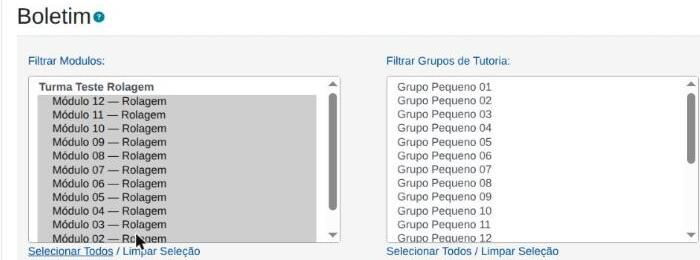
O que você deve ver
- “Selecionar Todos” marca todas as opções do filtro.
- “Limpar Seleção” desmarca todas.
- O clique não pula a página para o topo nem suja o endereço com um
#no final.
2O filtro ativo aparece contado no títuloNOVO
O que mudou
Antes, com o painel de filtro fechado, não havia como saber se o relatório estava filtrado ou mostrando a turma inteira — o título dizia sempre a mesma coisa, “Filtrar Resultados”. Um boletim de 3 grupos de 22 se lia igual ao da turma inteira. Agora a contagem aparece no próprio título, mesmo com o painel fechado.
Como testar
- Abra um relatório e escolha, por exemplo, 2 módulos específicos no filtro.
- Aplique o filtro e feche o painel.
- Olhe o título da seção de filtro.
- Passe o mouse sobre o título.
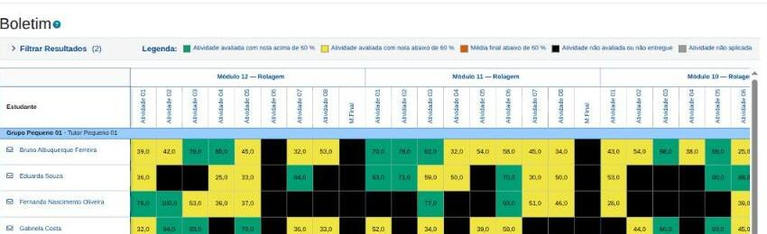
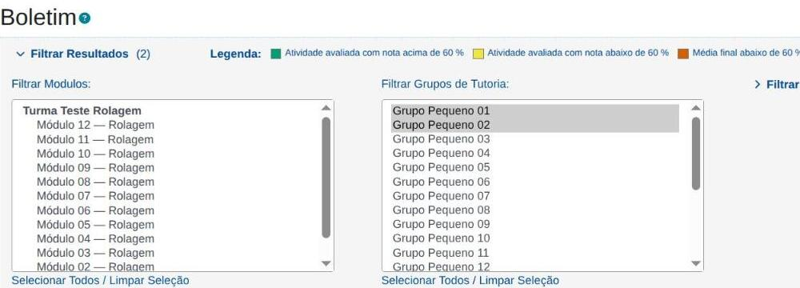
O que você deve ver
- O título muda para “Filtrar Resultados (N)”, com N sendo o total de opções que realmente estreitam o resultado.
- Uma seleção que cobre todo um filtro (por exemplo, todos os módulos) não entra na contagem — ela aparece como “Todos” só na dica, ao passar o mouse.
- Sem filtro nenhum aplicado, o título volta a ser só “Filtrar Resultados”.
3Grupos, Polos e Cohorts começam recolhidos, com dica ao passar o mouseNOVO
O que mudou
Os quatro filtros (Módulos, Grupos, Polos, Cohorts) eram blocos praticamente idênticos, sempre abertos, ocupando bastante espaço antes de chegar à tabela. Agora Módulos e Grupos — os mais usados — continuam sempre abertos, e Polos e Cohorts nascem recolhidos, mostrando só a contagem do que estreita.
Como testar
- Abra um relatório com filtro de Polos ou Cohorts.
- Repare no estado inicial de cada filtro.
- Clique na seta de Polos ou Cohorts para abrir.
- Passe o mouse (ou use Tab, pelo teclado) sobre o título recolhido.
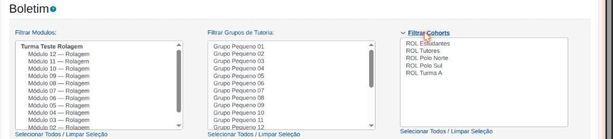
O que você deve ver
- Módulos e Grupos aparecem sempre abertos.
- Polos e Cohorts aparecem recolhidos, com uma seta clicável.
- A dica com os nomes escolhidos aparece ao passar o mouse e ao navegar até ali só pelo teclado.
- Com o painel aberto, a dica desaparece — os próprios campos já mostram tudo.
Sugestões sobre os filtros
O que ainda dá mais trabalho do que deveria, ao filtrar um relatório?
Parte 2 — Tabela dos relatórios
Abra um relatório com várias colunas e mais linhas do que cabem na tela — Boletim ou Entrega de Atividades costumam servir bem para este bloco.
4Cabeçalho e coluna do estudante ficam visíveis ao rolar
O que mudou
Antes, o cabeçalho e a coluna com o nome do estudante sumiam ao rolar a tabela para baixo ou para o lado — obrigando a rolar de volta ao topo só para lembrar de quem era aquela linha, ou qual atividade era aquela coluna. Agora os dois ficam fixos, mesmo com a tabela rolando por dentro.
Como testar
- Abra um relatório com muitas linhas e colunas.
- Role a tabela para baixo.
- Role a tabela para o lado.
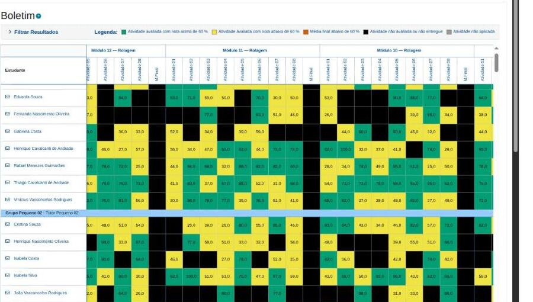
O que você deve ver
- O cabeçalho continua visível no topo, não importa até onde você role.
- A coluna do estudante (e o nome do grupo/tutoria, quando aparece) continua visível à esquerda, não importa até onde você role para o lado.
5As linhas não somem mais ao rolar a tabela
O que mudou
As linhas de divisão da tabela eram desenhadas em dobro (uma por cada célula vizinha). Isso funcionava até uma célula fixa (do item anterior) se deslocar — aí a linha sumia, ficava mais grossa, mais clara, ou formava um degrau entre o cabeçalho e o corpo, dependendo de onde você rolava. Agora cada linha é desenhada uma única vez.
Como testar
- Abra um relatório com muitas linhas.
- Role devagar, para baixo e para o lado, prestando atenção nas linhas de grade entre as células.

O que você deve ver
- As linhas de divisão continuam com a mesma espessura em qualquer ponto da rolagem.
- Nenhuma linha some, dobra de grossura ou fica mais clara ao rolar.
6A tabela usa a altura da tela, sem rolagem duplicada
O que mudou
A tabela tinha uma altura fixa que, dependendo da janela, deixava sobrar espaço vazio embaixo dela ou criava duas barras de rolagem empilhadas — uma da tabela, outra da página. Agora a tabela ocupa o espaço disponível até o fim da janela, com um tamanho mínimo para nunca desaparecer.
Como testar
- Abra um relatório grande, com a janela do navegador em tamanho normal.
- Redimensione a janela (mais baixa e mais alta).
- Abra o painel de filtro e observe a tabela de novo.
O que você deve ver
- Só existe uma barra de rolagem vertical, dentro da própria tabela — não a página inteira rolando por baixo dela.
- Em janela baixa, a tabela nunca fica menor que umas poucas linhas visíveis.
- Abrir o painel de filtro empurra a tabela para baixo, e o tamanho dela se ajusta de novo — sem sobra nem duas rolagens.
7Cabeçalho alinhado e títulos das atividades legíveis
O que mudou
O cabeçalho da tabela podia sair desalinhado das colunas de dados logo abaixo, e o nome de cada atividade — girado na vertical para caber — vinha espremido numa caixinha estreita, quebrando em várias linhas difíceis de ler.
Como testar
- Abra um relatório com nomes de atividade longos no cabeçalho.
- Confira se cada coluna do cabeçalho fica exatamente acima da coluna de dados correspondente.
- Leia o nome de duas ou três atividades no cabeçalho girado.
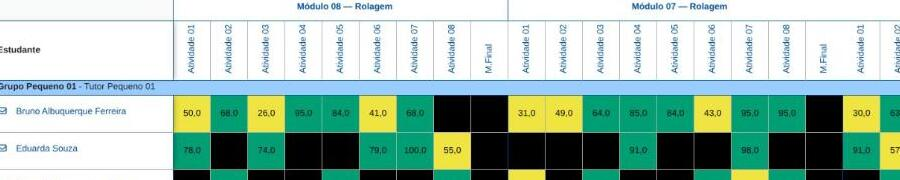
O que você deve ver
- Cada título do cabeçalho fica exatamente acima da sua coluna de dados.
- O nome da atividade aparece legível, em no máximo duas linhas, sem letras cortadas ao meio (inclusive com acento).
8Colunas de data mais compactas e claras
O que mudou
Nos relatórios de Uso do Tutor e Acesso do Tutor, cada coluna é um dia. O rótulo trazia o ano em toda coluna, repetindo uma informação que não muda linha a linha. Agora o dia aparece sem o ano (dia/mês), e o ano — quando o período cruza duas virações de ano — vai para o cabeçalho de cima, no nome do mês.
Como testar
- Abra o relatório de Uso do Sistema pelo Tutor ou Acesso do Tutor, com um período de vários dias.
- Leia os rótulos das colunas de dia.
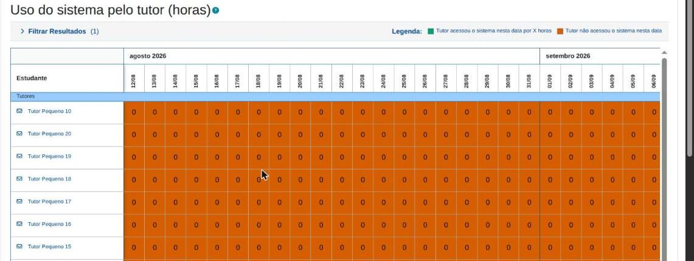
O que você deve ver
- Cada coluna de dia mostra só dia/mês (por exemplo, “10/03”).
- O cabeçalho do mês, uma linha acima, traz o ano quando necessário para não deixar ambíguo qual ano é aquele bloco de dias.
Sugestões sobre a tabela
O que ainda atrapalha na leitura da tabela de um relatório?
Parte 3 — Gráficos
Abra um relatório com botão de gráfico — Uso do Sistema pelo Tutor, Atividades vs. Notas ou Entrega de Atividades.
9Os gráficos voltaram a aparecer
O que mudou
Os gráficos dependiam de bibliotecas de terceiros muito antigas, incompatíveis com o Moodle 4.5. A área do gráfico ficava simplesmente vazia, sem nenhuma mensagem de erro — e o problema ia além do gráfico: em algumas páginas, o restante da tela também parava de responder. Os gráficos agora usam o mecanismo do próprio Moodle.
Como testar
- Abra um relatório com opção de gráfico (por exemplo, Entrega de Atividades).
- Clique no botão que mostra o gráfico.
- Procure o link ou botão “Mostrar dados do gráfico”.
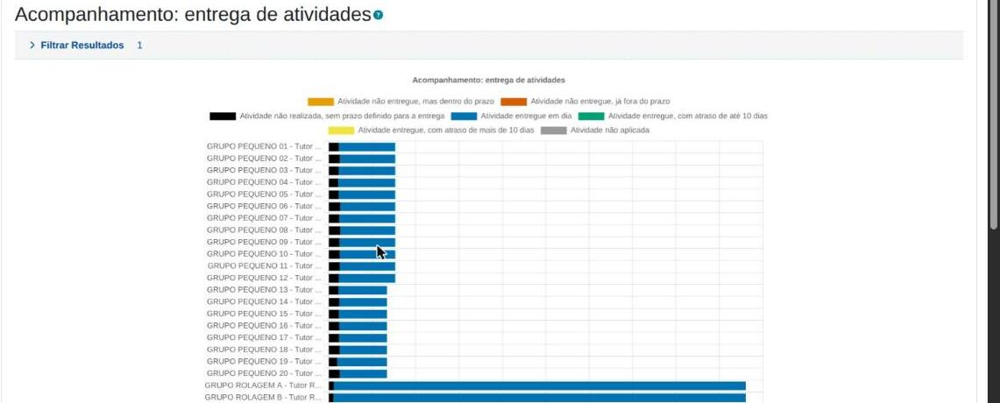
O que você deve ver
- O gráfico aparece com barras, nas cores certas para cada estado.
- “Mostrar dados do gráfico” abre uma tabela com os mesmos números em texto — útil para quem usa leitor de tela ou só prefere números.
- A página inteira continua funcionando normalmente depois de abrir o gráfico.
10O gráfico de uso do tutor virou um mapa de calorNOVO
O que mudou
O gráfico de pontos do relatório Uso do Sistema pelo Tutor não funcionava — a biblioteca que ele usava estava quebrada havia tempo, sem que ninguém percebesse, porque a área simplesmente ficava vazia. No lugar entra um mapa de calor: uma grade com um círculo em cada cruzamento de tutor e dia, o tamanho e a cor do círculo mostrando as horas de uso.
Como testar
- Abra o relatório Uso do Sistema pelo Tutor, com um período que tenha registro de acesso.
- Veja o gráfico.
- Passe o mouse sobre um círculo.
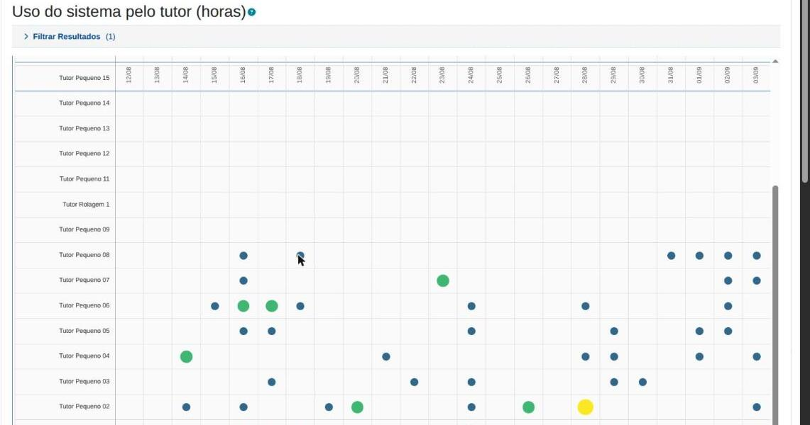
O que você deve ver
- Uma grade com um círculo (ou nenhum, se não houve uso) em cada cruzamento de tutor × dia.
- Passar o mouse sobre um círculo mostra o valor exato em um balão.
- Dia sem nenhum uso aparece sem círculo, não com um círculo minúsculo.
11Novo “Gráfico Comparativo” (barras lado a lado)NOVO
O que mudou
O gráfico de barras empilhadas mostra bem a composição de cada grupo (quanto é entregue no prazo, com atraso, não entregue), mas não deixa comparar o mesmo estado entre grupos diferentes — as barras começam em alturas diferentes, e comparar exigia medir a régua a olho. Agora existe um segundo botão, “Gráfico Comparativo”, com as barras lado a lado.
Como testar
- Abra um relatório com gráfico e mais de um grupo/tutoria no filtro.
- Clique em “Gráfico Comparativo”.
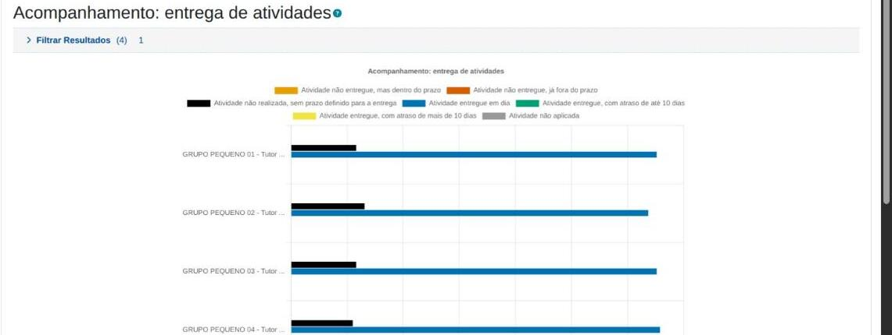
O que você deve ver
- As barras de cada grupo aparecem lado a lado, uma por estado, todas começando da mesma linha de base.
- Fica fácil comparar visualmente o mesmo estado (por exemplo, “não entregue”) entre dois grupos diferentes.
Sugestões sobre os gráficos
Que outra comparação ajudaria no seu dia a dia?
Parte 4 — Avisos e navegação
Estes itens dependem de provocar a situação certa — siga os passos com atenção.
12Mensagem clara quando falta configuração da turma
O que mudou
Quando a configuração de tutoria/orientação da turma estava errada ou faltando, o relatório caía na tela de emergência do próprio Moodle — sem menu, sem estilo, com uma mensagem técnica. Agora, nesse caso, o relatório mostra uma tela normal, explicando o que falta configurar.
Como testar
- Peça a quem administra o curso de teste para provocar essa situação (por exemplo, duas configurações de Relacionamento de Tutoria na mesma categoria, ou nenhuma).
- Abra um relatório dessa turma.
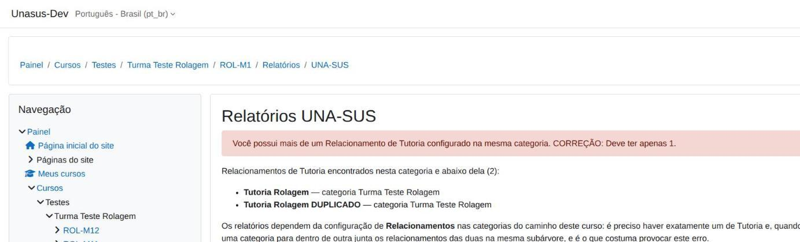
O que você deve ver
- A tela mantém o visual normal do Moodle (menu, estilo).
- A mensagem diz, em português simples, o que está faltando configurar — e não um erro técnico em inglês.
13Aviso quando os dados do TCC são de testeNOVO
O que mudou
Os relatórios de TCC podem, num ambiente configurado para testes, mostrar dados fictícios em vez dos dados reais do Sistema de TCC — e isso não tinha nenhum aviso na tela. Quem esbarrasse nisso via números que não existem em lugar nenhum, sem saber por quê. Agora aparece um aviso explicando a situação.
Como testar
- Abra um relatório de TCC (por exemplo, TCC Consolidado) num ambiente de teste que tenha esse modo ligado.
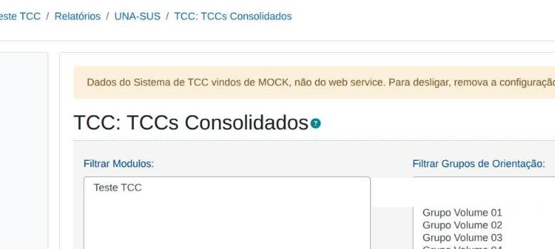
O que você deve ver
- Um aviso no topo do relatório dizendo que os dados de TCC são fictícios, de teste — e como desligar essa configuração, se for o caso.
- Em ambiente de produção normal (sem o modo de teste ligado), o aviso não aparece.
14O item “UNA-SUS” na lista de Relatórios do curso agora abre o relatório
O que mudou
Dentro do curso, em Relatórios, existia um item “UNA-SUS” que não levava a lugar nenhum — um link morto. Agora ele abre uma lista dos relatórios que você pode ver, de onde dá para entrar em cada um.
Como testar
- Dentro de um curso, acesse a tela de Relatórios do curso (não pelo bloco/menu lateral, pela lista de relatórios mesmo).
- Clique no item UNA-SUS.
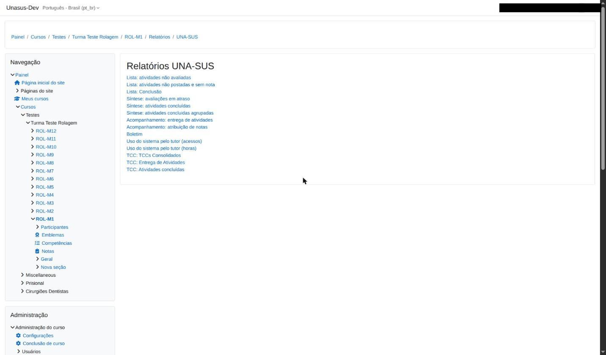
O que você deve ver
- O clique abre uma lista com os relatórios que o seu papel pode ver — e não mais uma página em branco ou nenhuma reação.
15Exportação para CSV corrigida
O que mudou
A exportação para CSV de vários relatórios (entre eles Síntese de Atividades Concluídas Agrupadas e os relatórios de TCC) tinha problemas de geração — colunas de cabeçalho e de resumo fora do lugar. Foi corrigida antes desta janela de comparação, mas continua valendo conferir: é uma exportação usada para levar dados para fora do Moodle, e um CSV com coluna deslocada pode passar despercebido até alguém tentar montar uma planilha com ele.
Como testar
- Abra um relatório (por exemplo, Síntese de Atividades Concluídas Agrupadas).
- Em Exibir como, marque Exportar para CSV e clique em Gerar relatório.
- Abra o arquivo baixado numa planilha.
O que você deve ver
- Uma coluna de cabeçalho por dado, sem coluna deslocada ou faltando.
- A coluna de resumo (quando o relatório tiver) aparece na posição certa, não misturada com as colunas de atividade.
Sugestões gerais sobre os relatórios
Agora que você viu o conjunto: o que mais melhoraria o seu dia a dia com os relatórios? O que ainda dá mais trabalho do que deveria?
Ganhos que não aparecem na tela
Este capítulo não pede que você teste nada — é um retrato do que mudou por baixo do capô, e por que isso importa mesmo sem aparecer numa tela.
Por que uma rede de testes automáticos, e não só olhar a tela
Os Relatórios UNA-SUS não são uma tela isolada: são 14 relatórios ativos, cada um com variações de filtro, de modo de exibição (tabela, gráfico, CSV) e de papel de quem olha — e a mesma mudança de código pode afetar vários relatórios ao mesmo tempo, de formas que não são óbvias à primeira vista. Conferir isso tudo manualmente, a cada pequena alteração, exigiria abrir dezenas de combinações uma a uma, em mais de um papel, para ter alguma confiança de que nada quebrou.
Foi exatamente isso que aconteceu antes de existir a suíte automática: consertos pequenos passavam despercebidos por meses sem ninguém notar que um relatório inteiro estava quebrado, porque não havia como olhar tudo toda vez. Com testes automáticos, essa conferência que levaria horas — e que, feita à mão, tende a ser adiada ou pulada — passa a levar segundos ou minutos, e é repetida a cada mudança, sem depender de alguém lembrar de fazê-la.
O que foi reconstruído
- 111 testes automáticos (PHPUnit) voltaram a funcionar. Eles não executavam mais havia tempo — e, pior, terminavam "com sucesso" sem testar nada, porque o sinal de erro não aparecia onde alguém fosse notar. Corrigido, cada um confere um pedaço específico do cálculo dos relatórios sozinho, em poucos segundos.
- Suíte completa de testes de tela (Behat) 100% aprovada, simulando clique de usuário de verdade num navegador automatizado — hoje roda em paralelo, em cerca de 12 minutos, contra quase 40 minutos rodando um teste de cada vez.
- Um bug que embaralhava dados de estudante em silêncio foi encontrado justamente ao migrar para o Moodle 4.5: uma consulta ao banco confundia duas atividades diferentes com o mesmo número interno, fazendo o relatório sair com linhas de estudante faltando, sem erro algum na tela. Sem teste automático, esse tipo de falha some — ninguém nota que uma linha não apareceu, só que apareceriam menos linhas do que deveria.
- Mais de 1 MB de bibliotecas antigas removidas (um jQuery de 2011 e um Highcharts de 2012). Elas não só quebravam os gráficos: em algumas páginas, derrubavam o funcionamento do restante da tela inteira, por conflitarem com a versão mais nova que o próprio Moodle usa.
- Paleta de cores segura para daltonismo nos gráficos, no lugar de uma combinação que confundia justamente os estados que o relatório existe para distinguir (entregue no prazo × com atraso × não entregue).
⚠ O que isso significa para o ritmo do trabalho
Sem essa rede de testes, cada uma das correções deste roteiro teria exigido horas de conferência manual repetidas a cada nova mudança — e o risco de uma correção quebrar outra parte do sistema, sem ninguém perceber a tempo, seria bem maior. O tempo que a modernização dos Relatórios UNA-SUS levou teria sido consideravelmente maior pelo caminho manual — e o resultado, menos confiável.
Ficha para registrar um problema
Use uma ficha para cada problema encontrado. Copie esta página quantas vezes precisar.
O que faz uma boa descrição
A pergunta que quem vai consertar sempre faz é: “como faço para ver isso acontecer de novo?”. Se você conseguir responder isso, o problema está praticamente resolvido. Anote o caminho que você percorreu, mesmo que pareça óbvio.
| Quem estava testando | papel: ☐ tutor ☐ orientador ☐ coordenação |
|---|---|
| Data e hora | |
| Item do roteiro | número: ________ (ou “fora do roteiro”) |
| Qual relatório | |
| O que eu fiz passo a passo |
|
| O que aconteceu | |
| O que eu esperava | |
| Acontece sempre? | ☐ sempre ☐ só aconteceu uma vez ☐ não tentei de novo |
| Atrapalha muito? | ☐ impede de trabalhar ☐ dá para contornar ☐ é só um incômodo |
| Navegador | ☐ Chrome ☐ Firefox ☐ Edge ☐ celular |
Se tirar uma foto ou uma imagem da tela, tampe qualquer nome ou identificador de estudante antes de enviar.